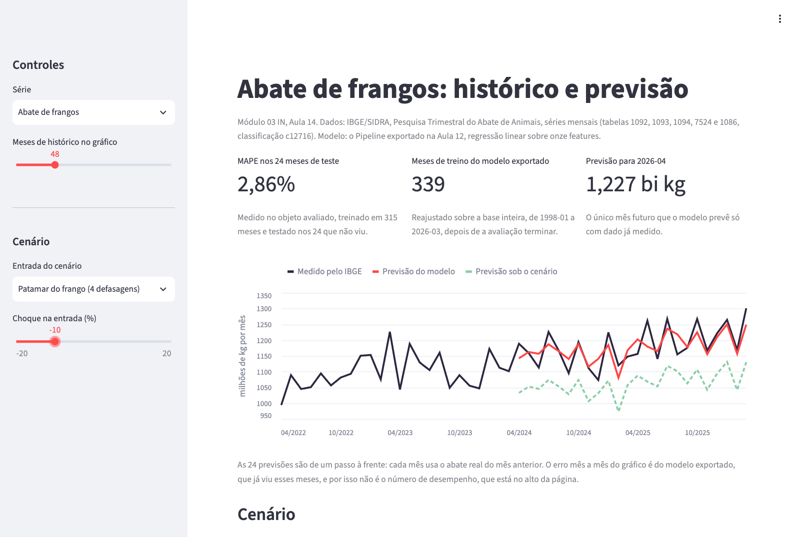
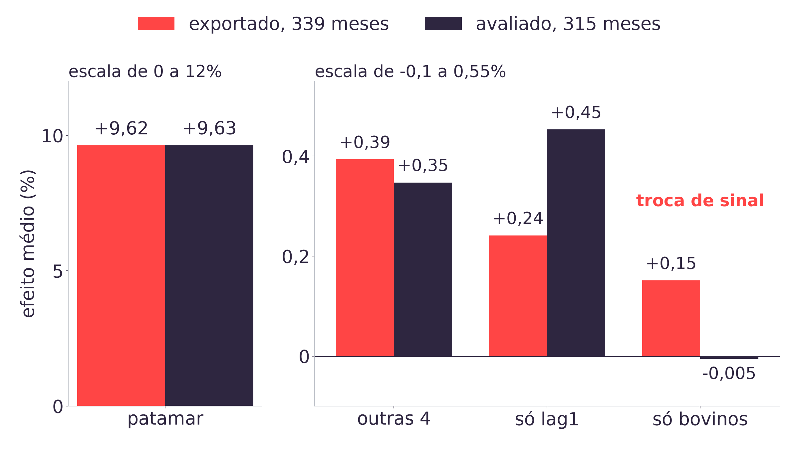

1. O que a Aula 12 deixou pronto
O arquivo app/modelo_aula12.joblib, de 1.481 bytes: um Pipeline
com StandardScaler e LinearRegression, sobre o alvo em nível
(abate_frangos), com onze features da base mensal. Ele foi reajustado sobre as
339 linhas, de 1998-01 a 2026-03, depois de a avaliação terminar. O número que o descreve é
2,86% de MAPE, medido no objeto avaliado, que treinou nos 315 primeiros meses
e foi testado nos 24 seguintes, de 2024-04 a 2026-03.
As onze features, na ordem em que o modelo as espera:
| Grupo | Colunas | O que medem |
|---|---|---|
| Defasagens do frango | lag1, lag2, lag3, lag12 | o abate de frangos de 1, 2, 3 e 12 meses antes |
| Calendário | sen, cos, dias | o mês do ano em forma circular e o número de dias do mês |
| Outras séries | abate_bovinos_lag1, abate_suinos_lag1, producao_ovos_lag1, producao_leite_lag1 | as outras quatro séries do SIDRA no mês anterior |
A aula não muda nada nesse arquivo. Tudo o que ela acrescenta é uma camada por cima, que lê o modelo e decide o que mostrar.
2. Como o Streamlit executa um app
Um app Streamlit é um script Python comum. streamlit run app/app.py sobe um
servidor local, abre o navegador em http://localhost:8501 e executa o script de
cima para baixo. Cada chamada st.* vira um elemento na página, na ordem em que
aparece no código.
import streamlit as st
import logica
st.title("Abate de frangos")
serie = st.selectbox("Série", logica.SERIES)
tabela = logica.carregar_series()[serie]
st.line_chart(tabela.set_index("periodo")["valor"])O modelo de execução é o que surpreende quem vem de JavaScript: a cada interação,
o script inteiro roda de novo. Quando o usuário troca a série no
st.selectbox, o Streamlit reexecuta o arquivo do começo, e desta vez a chamada
devolve a série nova. Não existe callback nem estado implícito entre uma execução e outra.
A consequência prática é o cache. Sem ele, cada movimento de um controle releria os cinco
CSVs e o .joblib do disco. O app usa os dois decoradores que o Streamlit
oferece, e a diferença entre eles importa:
| Decorador | Guarda | Usado no app para |
|---|---|---|
@st.cache_resource | o próprio objeto, compartilhado entre execuções | o Pipeline carregado |
@st.cache_data | uma cópia do resultado, que o código pode alterar sem afetar o cache | a base analítica, as cinco séries e o MAPE do avaliado |
O cache não muda o objeto: o modelo carregado com ou sem cache é o mesmo, e a previsão é idêntica. Ele só evita reler o disco. É a pergunta 1 do deck.
3. Por que a conta mora fora da tela
O app tem dois arquivos, e nenhuma conta mora no segundo:
| Arquivo | O que faz | Como é testado |
|---|---|---|
app/logica.py | carrega o modelo, monta a base, prevê, aplica o cenário, compara os dois ajustes | pytest comum, em tools/tests/test_app_aula14.py |
app/app.py | decide o que aparece e em que ordem | streamlit.testing.v1.AppTest, que executa o script sem navegador e deixa clicar nos controles |
A separação tem três efeitos. As contas são testáveis sem subir servidor. O notebook da aula importa o mesmo módulo, então o que a dupla confere no Colab é exatamente o que o app mostra. E a tela fica curta o bastante para ser lida de uma vez, o que importa quando alguém da LDC quiser saber de onde veio um número.
logica.py reimplementa a montagem da base em vez de importar
tools/exportar_modelo_aula12.py, para app/ não depender de
tools/. O primeiro teste da suíte confere que as duas produzem a mesma matriz,
número a número: duplicar código só é aceitável com um teste que impeça as cópias de
divergir.
4. O número de erro que acompanha a tela
O app carrega o objeto exportado, e a tentação é mostrar o erro dele nos 24 meses que o gráfico exibe. A medição:
| Objeto | Treina com | MAPE nos 24 meses de teste | Na tela |
|---|---|---|---|
| Avaliado | 315 meses, até 2024-03 | 2,86% | no cartão de MAPE |
| Exportado | 339 meses, até 2026-03 | 2,65% | não aparece |
O exportado treinou com os 24 meses de teste. Medi-lo ali devolve o erro sobre dado já
visto, que não estima desempenho futuro nenhum; publicá-lo seria o vazamento da Aula 09 numa
forma nova. O app recalcula o 2,86% a partir dos CSVs, com mape_do_avaliado, e
não o escreve à mão: se a base mudar, o número muda junto.
O gráfico, porém, mostra as previsões do exportado, porque é o objeto que a LDC recebe. A legenda embaixo dele diz isso. O maior erro mês a mês que aparece ali é de 6,51%, em 2025-05, e ele também é do exportado.

5. Um passo à frente, e o único mês futuro
As 24 previsões do gráfico são de um passo à frente. Para prever 2025-05,
o modelo usa o abate real de 2025-04 como lag1; para prever 2025-06, usa o real
de 2025-05, e assim por diante. O erro de um mês nunca contamina o seguinte.
O TAPI da LDC pede outra coisa: 24 meses de horizonte a partir de hoje. Para isso, o
lag1 do segundo mês seria a previsão do primeiro, e as outras quatro séries
precisariam de modelo próprio. A Aula 05 mediu, na base trimestral, que prever o horizonte
inteiro de forma recursiva leva o MAPE de 1,60% para 2,85%. A tela precisa deixar claro qual
das duas perguntas ela responde, e a legenda do gráfico faz isso.
Existe exatamente um mês futuro que o modelo prevê só com dado medido: o seguinte ao último do CSV. Para 2026-04, as onze entradas já existem (o abate de frangos de 2026-03, 2026-02, 2026-01 e 2025-04, o calendário de abril, e as outras quatro séries em 2026-03). A previsão do exportado é de 1.227.063.556 kg, que o app mostra como 1,227 bilhão. Não há valor medido para comparar com ela no acervo, que para em 2026-03.
6. O eixo que começa em zero
O st.line_chart é a chamada que o roteiro e os autoestudos ensinam, e é a que
o app mínimo usa. O app de app/ a trocou por um gráfico Altair (a biblioteca que
o próprio Streamlit usa por baixo), por um motivo visível: o eixo vertical do
st.line_chart começa em zero. Numa série que oscila entre 1,0 e 1,3 bilhão de
quilogramas, isso comprime a variação num quinto da altura, e um erro de 2,86% vira uma linha
quase reta sobre outra.
O Altair deixa declarar scale=alt.Scale(zero=False). O eixo passa a começar
perto de 950 milhões, e a distância entre previsão e realizado fica visível. A regra vale para
qualquer gráfico: numa série de nível, o eixo deve mostrar a faixa em que a
variação acontece, e dizer em que unidade está (milhões de kg por mês).
7. O erro de propósito: o cenário de milho
A primeira pergunta de um trader de grãos seria "e se o milho subir 10%?". O notebook manda tentar, e o resultado é este:
ValueError: entrada fora do modelo: preco_milho. O Pipeline da Aula 12 só lê
as onze features de FEATURES; um cenário sobre outra variável exige outra
feature, outra fonte e outro modelo.A mensagem diz três coisas. Qual entrada foi recusada. Por
quê: o Pipeline recebe uma matriz de onze colunas, e nenhuma delas é
preço. E o que faltaria: uma feature nova, uma fonte de dado aberta que a
sustente e um modelo retreinado e reavaliado.
O erro é pedagógico porque a alternativa silenciosa é pior. Um controle de milho que aceitasse o valor e não mudasse nada na previsão ensinaria ao usuário que o preço do milho não afeta o abate de frango, e isso é uma afirmação sobre o mundo que o modelo nunca testou. Um controle que parece funcionar e não lê nada é mais perigoso que a ausência do controle.
O que faltaria para o milho entrar, por extenso: uma série mensal aberta de preço (o indicador de milho do CEPEA é a candidata natural), uma hipótese declarada sobre a defasagem com que o preço afeta o abate, a feature construída sem vazamento temporal, e o modelo reavaliado no mesmo corte de 24 meses, contra o 2,86% atual. É uma ART inteira, e fica registrada na tela, no expansor "Entradas que o modelo não usa".
O paralelo com a Aula 02 é direto. Lá, o TAPI pedia previsão mensal sobre um dado que parecia só trimestral, e o descompasso virou conteúdo. Aqui, o parceiro vai querer variar o preço de um insumo que o modelo não tem. Declarar o que o modelo não responde é parte do entendimento do negócio, na primeira sprint e na última.
8. Por que o grupo é estável e a coluna isolada não
O cenário do app aplica um choque percentual a um grupo de colunas nos 24 meses de teste e recalcula a previsão. Para saber se o efeito medido é propriedade do modelo ou acidente de um ajuste, a aula aplica o mesmo choque em dois ajustes do mesmo modelo, que diferem só em 24 meses de dado:
| Choque de +10% em | Exportado, 339 meses | Avaliado, 315 meses | Mesmo sinal |
|---|---|---|---|
lag1, lag2, lag3 e lag12 juntos | +9,624% | +9,630% | sim |
| As outras quatro séries no mês anterior, juntas | +0,394% | +0,347% | sim |
Só lag1 | +0,241% | +0,453% | sim, e quase o dobro |
Só abate_bovinos_lag1 | +0,151% | -0,005% | não |

O mecanismo é o que a Aula 12 mediu. As quatro defasagens do frango são colineares, com VIF de até 69: dizem quase a mesma coisa, e muitas partilhas de peso entre elas produzem quase o mesmo ajuste. Por isso o reajuste move a partilha, e a soma fica quase parada. Em unidades originais, a soma dos quatro coeficientes vale 0,976 no exportado e 0,970 no avaliado.
Um choque no grupo inteiro lê a soma. Um choque numa coluna só lê a partilha. Por isso o mesmo 10% dá quase o mesmo efeito quando aplicado ao patamar e efeitos que dobram ou invertem quando aplicado a uma coluna.
Vale desarmar uma leitura errada do primeiro número. +10% no patamar virar +9,62% na previsão não é descoberta: com a soma dos coeficientes perto de 1, o modelo diz que o abate de um mês acompanha o dos meses anteriores, o que qualquer pessoa da LDC já sabe. O valor desse cenário está na estabilidade entre os dois ajustes.
O modelo é linear, então o efeito é proporcional ao choque: -10% dá exatamente -9,624%, e +20% dá +19,249%. Aumentar o choque não conserta um cenário instável, só aumenta o número instável.
9. Critérios de publicação
A tabela abaixo é uma proposta do acervo para a ART.9, montada com os achados das Aulas 09 a 14. A rubrica que avalia a entrega é a da Adalove.
| Critério | Como conferir | Aula de origem |
|---|---|---|
| O erro publicado foi medido fora da amostra | MAPE do objeto avaliado, com o corte temporal declarado | 09 e 12 |
| A tela diz o que está mostrando | previsão de um passo à frente; só frango tem previsão; unidade no eixo | 05 e 14 |
| Cenário só sobre entrada que o modelo lê | mesmo sinal e mesma ordem de grandeza nos dois ajustes | 12 e 14 |
| A explicação é tão estável quanto o número | leitura de coeficiente conferida contra um reajuste | 10 e 12 |
| Roda do zero em outra máquina | app/requirements.txt, versão do scikit-learn, último mês da base | 12 |
| O que ficou de fora está escrito | preço do milho, horizonte de 24 meses, Modelos 2 e 3 do TAPI | 02 e 14 |
O acervo decidiu não publicar o app como serviço externo (docs/adrs/ADR-016):
ele vive em app/ como código versionado, e roda na máquina de quem clonar o
repositório. O site continua estático. Publicar num serviço exigiria decidir quem mantém o
servidor, quem atualiza os CSVs e quem responde quando a versão do scikit-learn
mudar, e cada uma dessas perguntas é um critério de publicação a mais.
10. A linha do tempo do case
O que cada aula deixou pronto, com o número que ela mediu. Os números são copiados das aulas de origem.
| Aula | Data | Sprint | O que ficou pronto |
|---|---|---|---|
| 01 | 04/08 | 1 | leitura do CSV de abate bovino do SIDRA em Python |
| 02 | 07/08 | 1 | os três modelos do TAPI mapeados no CRISP-DM e a decisão trimestral |
| 03 | 11/08 | 1 | a EDA das cinco séries |
| 04 | 19/08 | 2 | a base analítica com defasagens e sazonalidade |
| 05 | 24/08 | 2 | o primeiro modelo, com MAPE de 1,60% contra 1,69% da baseline, em trimestre |
| 06 | 01/09 | 3 | K=4 recupera o trimestre do calendário em 98,3% das linhas |
| 07 | 04/09 | 3 | a base mensal, 339 linhas, e a regressão sobre a razão a 3,32% contra 3,71% da LDC |
| 08 | 10/09 | 3 | PCA com PC1 em 68,21% da variância, e o custo do corte |
| 09 | 15/09 | 4 | o protocolo da ART.7; a baseline majoritária acerta 83,3% |
| 10 | 17/09 | 4 | a floresta ajustada a 4,21%, TimeSeriesSplit e SHAP |
| 11 | 24/09 | 4 | o linear sobre o alvo em nível, a 2,86% |
| 12 | 29/09 | 5 | o Pipeline exportado, de 1.481 bytes, reajustado sobre 339 meses |
| 13 | 30/09 | 5 | revisão para a prova (docs/adrs/ADR-016) |
| 14 | 06/10 | 5 | o app com histórico, previsão e cenário |
Duas decisões atravessam a tabela e merecem aparecer na apresentação final. A correção de granularidade da Aula 07, que levou o case de 117 trimestres para 339 meses e ao mesmo horizonte que o parceiro pediu. E a decisão de alvo da Aula 11, que mostrou que o alvo em razão, escolhido na Aula 07 para a árvore, custava 0,46 ponto ao modelo linear.
11. IA generativa como horizonte
IA generativa é o nome dado aos modelos que produzem conteúdo novo (texto, código, imagem) a partir dos padrões do dado de treino. Três técnicas cobrem a maior parte do que se usa hoje:
| Técnica | Como funciona, em uma frase | Fonte primária |
|---|---|---|
| Modelo de linguagem sobre transformer | é treinado para prever o próximo símbolo de uma sequência, e gera texto repetindo essa previsão | Vaswani et al., 2017 |
| Modelo de difusão | aprende a remover ruído de uma imagem, e gera partindo de ruído puro | Ho, Jain e Abbeel, 2020 |
| Recuperação com geração (RAG) | busca trechos de documentos antes de gerar, e ancora a resposta neles | Lewis et al., 2020 |
O primeiro item tem uma relação direta com o módulo: prever o próximo símbolo é um problema
de previsão, com alvo, entrada e erro. A diferença para o modelo do case está no que se pode
afirmar sobre o resultado. O Pipeline da Aula 12 tem um erro medido fora da
amostra, um corte temporal declarado e coeficientes que se pode reajustar e comparar. Um
modelo de linguagem que escreva "1,227 bilhão de kg" não tem nenhuma dessas três coisas
para aquele número.
Onde ela poderia entrar no pipeline da LDC
A tabela do deck é uma proposta para o debate, e a turma pode discordar de qualquer linha:
| Etapa | Uso possível | Risco | Como conferir |
|---|---|---|---|
| Dados | extrair tabelas de boletins em PDF, como os do Sindirações que o TAPI cita e o acervo não tem | número lido errado, sem aviso | somar as linhas contra o total publicado |
| Código | rascunho de função e de teste | erro plausível, que roda | um teste que já foi visto falhando |
| Previsão | gerar o número do mês | sem erro medido, sem reprodutibilidade | não entra |
| Relatório | redigir a leitura dos números para a LDC | frase afirmativa sem número atrás | cada frase com a fonte do número |
A linha de dados liga o horizonte à Aula 02: os boletins em PDF são dado não estruturado, e transformá-los em tabela é exatamente o tipo de tarefa em que a técnica tem vantagem e em que o erro é mais difícil de ver.
Os desafios de autoria
A declaração de posição do COPE sobre autoria e ferramentas de IA, de 2023, afirma que essas ferramentas não podem ser autoras de trabalho científico, porque não respondem por ele, e que quem as usa deve declarar o uso e responde pelo resultado. O princípio se estende à entrega do módulo: na ART.10, a dupla responde por cada número e cada frase da apresentação, tenha ou não usado um assistente para escrevê-la. O autoestudo da semana aprofunda o tema.
12. Escopo das conclusões desta aula
- A estabilidade dos cenários foi medida em dois ajustes, com 24 meses de diferença. Não é um intervalo de confiança do efeito; é uma checagem mínima de que o sinal não depende de um ajuste específico.
- O cenário é aplicado às 24 previsões de um passo à frente. Ele não propaga o choque para os meses seguintes, porque isso exigiria prever as outras séries.
- O modelo é linear. Em modelos não lineares, como a floresta da Aula 10, o efeito deixa de ser proporcional ao choque, e a conferência precisa ser refeita para cada tamanho de choque.
- O app foi testado com o Streamlit 1.64 e o
AppTestdo próprio pacote. A interface de testes do Streamlit ainda muda entre versões.
13. O que a dupla entrega na ART.9 e na ART.10
| Entrega | Peso | O que sai desta aula |
|---|---|---|
| ART.9 Critérios de Publicação | 3 | o app da dupla, o notebook que roda do zero e a tabela da seção 9 preenchida |
| ART.10 Apresentação final | 3 | a linha do tempo da dupla, com o número e o arquivo de cada etapa |
Os dois pesos são os registrados na Adalove, em PLANO_DE_ENSINO.md. A Sprint 5
e o módulo fecham em 07/10.